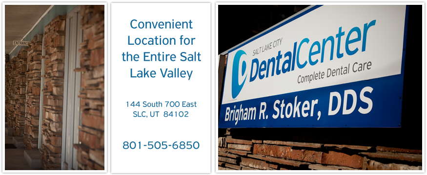
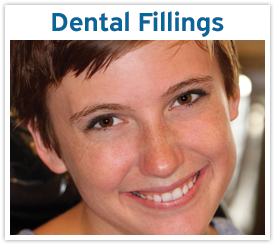
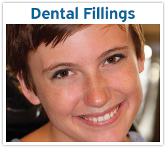

 

Get to know Salt Lake City dentist, Dr. Brigham Stoker DDS, here at the Salt Lake City Dental Center to see if his practice is right for you.
Call us today to schedule a dental exam, a walk in emergency visit, or a consultation. We’re even open on Fridays!
See some of the many dental services we offer here at Salt Lake City Dental Center by choosing one of the featured cases above.